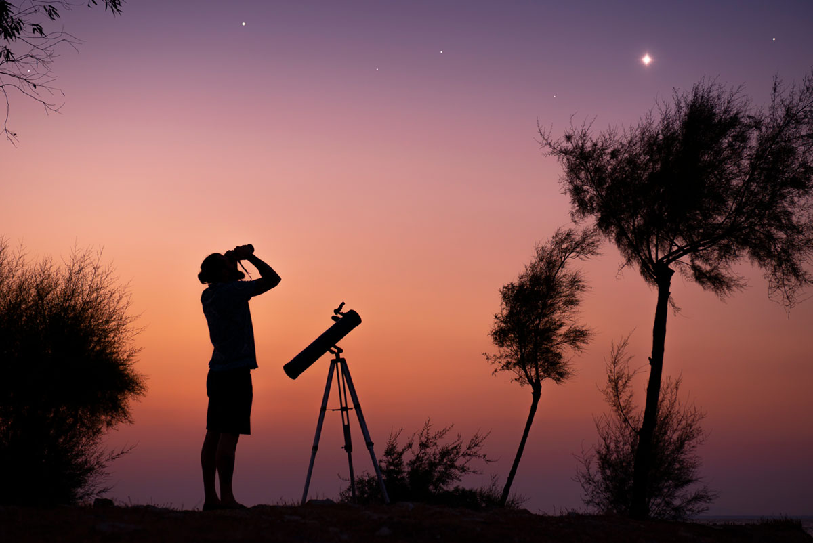

I am Amature Astrophographer i like to capture the beautiful photons that strike on my camera from the space & i like travel back to the time through my telescope.
A starry night is always excites me and i like to capture the moment of silence with help of my telescope camera
i have some sets of Beginner level telescopes and a powerful telescope trough that we get stuning images of the galaxies,nabulae,Stars
and i have a DIY telescopes details about these telescopes are attached in the collection menu.